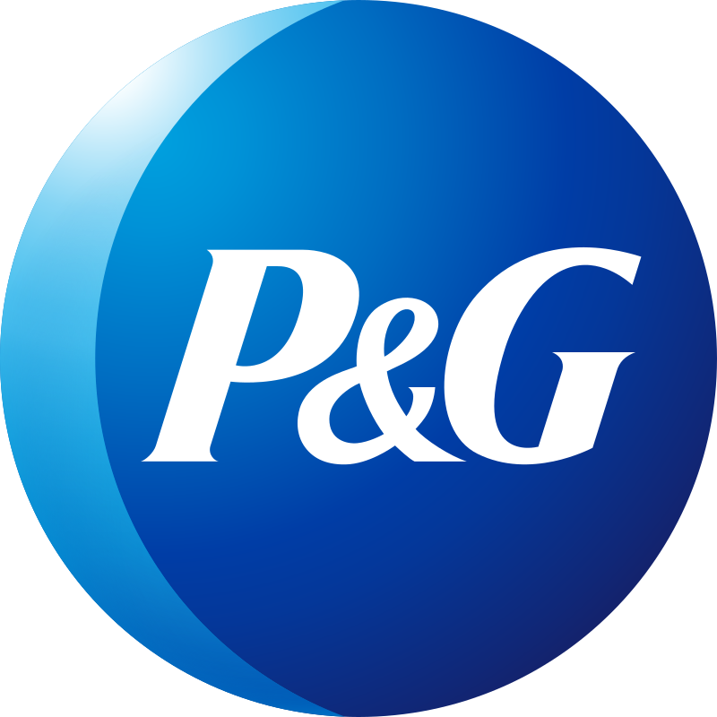
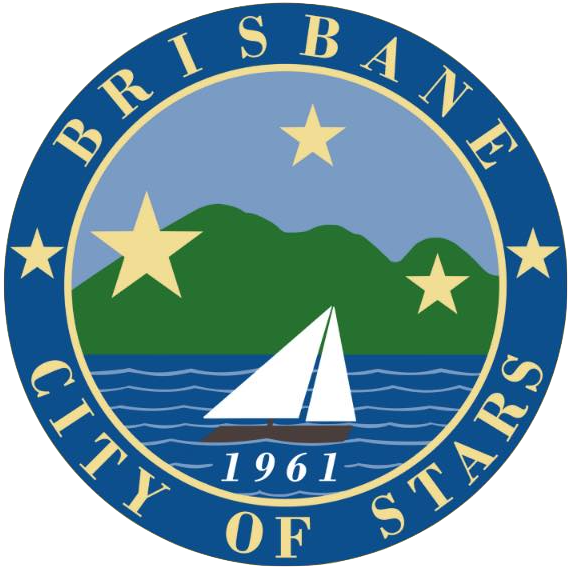

Within the Personal Health Care division of P&G, I worked as a products researcher in a global team (Global SSC) where I produced insights for brands like VapoRub, ZzzQuil and Nervive.
About Me
Hey! I'm a junior at Northwestern (Class of 2026) studying Environmental Engineering, Energy & Sustainability, and Design. I'm interested in solving environmental challenges and closing the waste loop by designing circular, self-sustaining systems that utilize nature-based technologies.
I’m a creative problem-solver with technical scientific training and roots in writing and journalism. I take on ambitious projects with a thoughtful, detail-oriented approach that leads to comprehensive, insightful, and consistent results. My experiences include R&D at Procter and Gamble for Vicks, carbon capture research at Stanford, and sustainability compliance for the City of Brisbane.
In my free time, I love being outside! Between going on long beach walks to hiking Yosemite (and capturing it all with my camera), I'm a California girl at heart and love to explore and try new things. On a rainy day, I enjoy painting with my friends, reading a good book, and cooking up a new dish.
Welcome to my portfolio; keep scrolling to get to know me and what I’ve been working on!
I’m a creative problem-solver with technical scientific training and roots in writing and journalism. I take on ambitious projects with a thoughtful, detail-oriented approach that leads to comprehensive, insightful, and consistent results. My experiences include R&D at Procter and Gamble for Vicks, carbon capture research at Stanford, and sustainability compliance for the City of Brisbane.
In my free time, I love being outside! Between going on long beach walks to hiking Yosemite (and capturing it all with my camera), I'm a California girl at heart and love to explore and try new things. On a rainy day, I enjoy painting with my friends, reading a good book, and cooking up a new dish.
Welcome to my portfolio; keep scrolling to get to know me and what I’ve been working on!
Projects
From designing a bioreactor to treat ethylbenzene waste to manufacturing a metal trash can compacting device, I've been a part of some cool projects. Check them out!
Experiences

Research & Development Intern | June - August 2024 |
Cincinnati, OH
Cincinnati, OH
Within the Personal Health Care division of P&G, I worked as a products researcher in a global team (Global SSC) where I produced insights for brands like VapoRub, ZzzQuil and Nervive.
Undergraduate Researcher | September 2024 – present |
Evanston, IL
Evanston, IL
In the Dunn Lab, I work under graduate student Yasheen Jadidi, where I contribute to the finalization stage of a tool that measures the environmental impact of polymerization reactions that turn biofeeds into plastics.

Sustainability Intern | June – September 2023 |
Brisbane, CA
Brisbane, CA
The city of Brisbane is a small city just south of San Francisco that is home to dozens of industrial and commercial buildings, all of which are regulated by the city's robust sustainability, water, and energy programs. As a Sustainability Intern, I assisted city building owners with complying with regulation and decreasing their environmental footprint.
Summer Research Fellow | June – September 2023 |
Stanford, CA
Stanford, CA
I spent the other half of my summer of 2023 in the Maher Lab in the Doerr School of Sustainabilty, where I experimented with adsorption of CO2 gas to different types of biochar.
Resume
Endorsements
Final review feedback from my managers at Procter and Gamble (August 2024).
Contact Me
 gianna@brogley.com
gianna@brogley.comgiannabrogley2026@u.northwestern.edu
 (650)-714-2694
(650)-714-2694

Copyright © 2024 Gianna Brogley
Background photo taken by me in Milford Sound, NZ